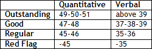

Yes, it is. We have just completed the 8 Analyses of the 8 Competences.


8 Superpowers…

Exactly. At the end of each of our stages in our Megaron Marathon you are encouraged to pause and reflect. This break gives you the chance to consider the implications of the information or the decisions that you might need to take, to jot down questions, etc.
What is important to know at this point of my path?
Let’s check the doubts that our Heroes had last year. Most probably their doubts are on your mind, or should be.
Great.
Pardon me?
Is it worth facing 45’ in traffic to arrive at an Info Session, hear 60’ of blah, blah, stay on my feet for another 40’ standing in a circle, eat some cold ‘coxinha’, drink some cheap wine, pay 20 bucks for parking, and then spend another half hour driving back home?
Is it worth? I would not be able to say. I’d have to know you better in order to answer that.
Huh?
People draw different benefits from similar experiences, don’t they?
Huh?
Let me ask you. Are you having GMAT lessons at Megaron?
Yeah.
How many of the other marathoners have your e-mail? How many times have you met them outside class to exchange views on the process?
Not once. Why?
Hum hum...
You know it… I was not there to meet people.
I may be wrong, but I guess if you think that way, either you will have to change that attitude/posture or you will not profit at all from those School Info Sessions.
Oh, don’t be mean.
Essentially, there are 3 WAYS for you to exchange/share knowledge with AdCom/Alumni.
Unfortunately, for the unprepared applicants (or those without attitude) those Info Sessions are only about (2).
But (2) is the event per se. The alumni say the obvious and the audience listens. Then, everyone goes home and that’s it.
Exactly: WASTE OF TIME.
Perhaps I have to go back to basics: what is an Off-campus Information Sessions?
These events are “structured” to give applicants an opportunity to learn about the SCHOOL and admissions process from admissions officers, alumni, and sometimes current students.
How?
Essentially (2): exposition (blah, blah) + Q&A + cold “coxinha” + cheap wine.
Planning is the key to making sure that you can participate in an information session.
- Most of such events require registration. Check whether there is a list of attendance. Some ‘data forms’ will ask later, “have you attended Info Sessions? When?” They may verify your presence; thus, do not register if you do not intend to go;
Table A – School Links Register
- If you know any alumni who are promoting the event locally, you should send them an email. “Will I see you there?”
- Anticipate the questions that alumni may ask, so you are not caught off guard, “Where do you work?”; “What do you do?”
- Think of questions that you want/need to ask. Think of questions whose answers are not on their FAQ on the Website. Prepare 2-3 insightful questions.
Any suggestions for questions?
One likes to talk about oneself, right? And at the same time, you want to throw your sales pitch. How about that?
It goes without saying: do not forget the opening: LEAD SENTENCE / TOPIC SENTENCE. Yeah, yeah, the same principle we use in writing suits your ORAL speech.
Cool… and after the event?
- Send a “thank-you e-mail” to those you talked to (admissions officer, too) – I know it sounds bull, I know;
- You may want to talk particularly to that guy you know. “I would like to tell you how impressed I was by X and Y that Z described”;
- If you are really interested in that specific school (you would not have been to their info session otherwise, right?) invite the host for a lunch or coffee. Often, genuinely engaged alumni will welcome your initiative. They want to sell their school to prospective students;
- Naturally, be sensible. Your goal is to demonstrate your interest in their school and not become a burden on those people.
And, is that all?
A month or so after the Info Session:
- Send an e-mail to the Alumni Brazilian Chapter of your target school. Ask relevant questions (please, do not request information that is available on the webpage) Get insights to write on your essays;
- Try to get in touch with clubs of you interest at your target Schools. Ask them for contacts of Brazilian members of specific clubs;
- Naturally, know when it is enough. You want to show your interest; you will not flood their inbox with a dozen messages.
Tough call - let’s try to answer this question beginning with the basics: Side Letter - What is that? The Admissions Committee uses the recommendation letters to verify your experience, confirm your competence, and reinforce the credibility in your essays. Usually, B-Schools do not welcome additional letters of recommendation. Stanford even states on its website: “we strongly discourage you from sending more than the three required Letters of Reference.”
And who can write?
Despite the clear statement above, you cannot prevent your fan club from putting in a good word for you through a side letter. I would advise you to have your friends (current student or alumni) send in ‘unsolicited’ votes of confidence and letters revealing why they think you have fit with X School. The current student or an alumnus that will write this kind of letter must know you well and preferably must have interacted with you. He should not repeat what the other two people already stated about you. His purpose is to say something NEW and to reinforce your FIT with the school to which you are applying.
Is it really important to get a side letter from a BIG NAME in order to get a chance to HBS?
NO, YOU DO NOT NEED A LETTER OF A BIG NAME TO BE ADMITTED TO HBS. Just to illustrate: in 2008 we advised 9 students who were accepted at HBS, and just one managed to send a BIG NAME side letter to the Admission Committee. And I am pretty confident that he would have been admitted if he had not done so.
To whom should I send this letter?
There is no sideletter@escolaX.edu; the applicant will have to find a way to have his side letter reach the AdCom. How? You or your recommender should know someone from the Admission Committee. Example: Roberto Carlos wants to refer you to HBS. Either he or you should contact someone from the AdCom that could kindly receive this email (remember the AdCom de HBS is hardly accessible to most, including HBS alumni; for Columbia, on the other hand, alumni send emails and side letters directly to the Admissions Director.
When to write?
Preferably when you have just sent your application.
My father has business connections with a BIG NAME, Stanford alumna. Is there any way I might be able to take advantage of this connection?
I think you should have asked me a more important question before that one - consider a broader strategy: “how to create a networking to the MBA Process”? It is very important to create a group to support your candidacy throughout the process. It is not rare to see that the guy you met at the MBA fair can help you out of a wait list.
Find below a series of initiatives:
- Visit your target School, ask for a tour, attend a class, and hope that the people you meet will later put in a good word for you;
- Do you have close friends or relatives who know alumni and have the kind of relationship in which they could ask the alumnus/alumna to put in a good word for you? Meet with the individual so that he/she writes something compelling based on his/her knowledge of your qualifications, goals or fit with the school;
- Attend the MBA fairs. Talk to the Admission Committee members, current students and mainly alumni. Exchange business cards; send a “thank-you email” next day. Invite them for a lunch, etc.;
- If you know people with connections to Admission Committees and alumni or students who volunteer in admissions, ask them to support your candidacy. Get insights to write on your essays;
- Try to get in touch with clubs of you interest at your target Schools. Ask them to reveal Brazilian members;
- Send e-mail for the Alumni Brazilian Chapter of your target school. Ask relevant questions (please, do not ask for information available on the internet)

Candidates could raise a ‘Red Flag’ in terms of a Low GMAT in two circumstances: When they have poor partial scaled scores in terms of Quantitative and Verbal.

But is this grid adequate for the orientation of an international applicant?
This grid is more appropriate to international students. If the applicant could choose, it would be better to have a low verbal scaled score – that’s because there are other opportunities on the application to address your verbal deficiency (essays, TOEFL, interview, etc.) Please, Nicholas, I strongly recommend that you read again Km - 2 – GMAT.
And what’s the other circumstance?
When they have GMAT at the lower end of or below the mid-80% range.
(Source: 2003)
Ok, Megaron, but what if I cannot get the ideal score? What should I do?
Observe Table B below:
In all Info Sessions, AdCom officers rush to say that they have admitted applicants with a 620 on the GMAT...
Be careful with such ‘propaganda’. The candidate should suspect when a certain Admission Director says that his School has just accepted someone with a 580 on the GMAT. In reality, he is trying to improve the School’s status regarding ranking. One of the many criteria that define the rankings is the YIELD (acceptance rate), basically the number of students accepted over the number of applications received - for School, the pickier, the better.
I am so sorry to say that I did poorly at Poli...Top 75%. Can I make the case that after the fourth year at Poli I started attending a very demanding trainee program, and therefore my grades decreased? Until the third year I was a top-35% student...
For sure, you can make your point here. But I can say that a lot of applicants are top-25% during the whole course while attending "demanding trainee programs". It is the saying "explain, but don't justify". You are expected to attend a very demanding course there, not in intellectual terms, but especially due to time dedication. AdCom are looking for evidence that candidates can reveal how they will be able to do several activities at the same time, preferably with excellence.
Ok.
That’s it for the time being. Send me an e-mail (megaron@gmail.com) if you have any more doubts or questions at this moment of your Marathon.
Thank you, Megaron.